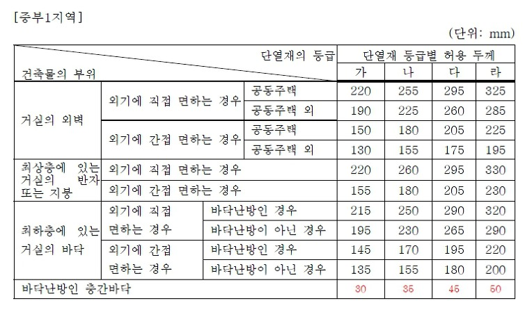
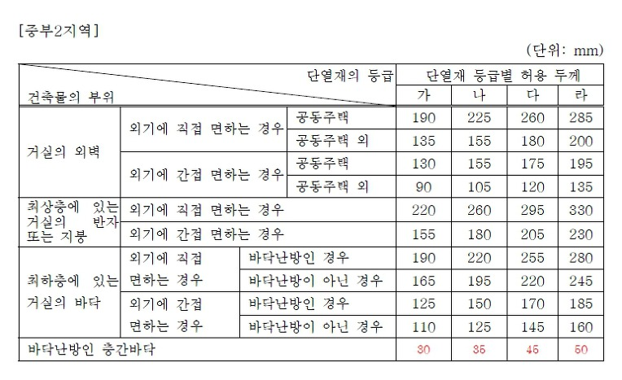
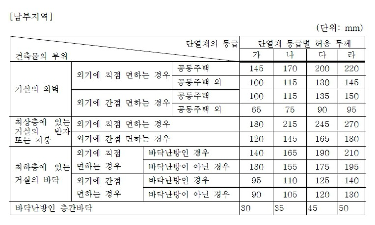
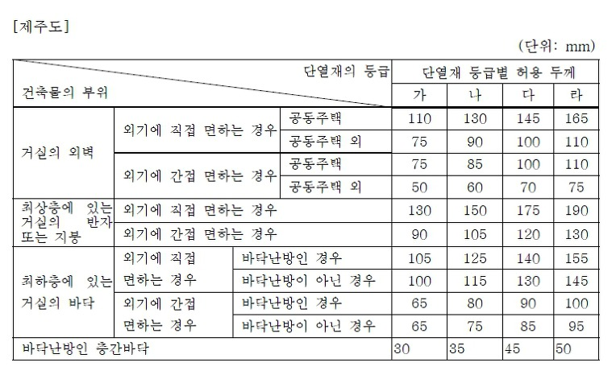
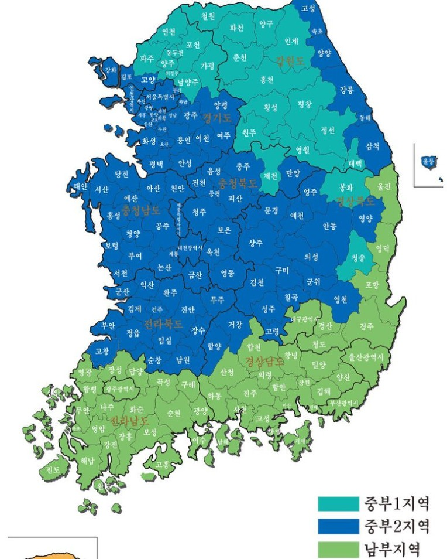

'건축물의 에너지 절약설계기준'이 일부 개정되어 2018년 9월부터 시행되었습니다. (아래 파일을 참고바랍니다)
▷단열재의 두께 (2018.09.01)





1) 중부1지역 : 강원도(고성, 속초, 양양, 강릉, 동해, 삼척 제외), 경기도(연천, 포천, 가평, 남양주, 의정부, 양주, 동두천, 파주), 충청북도(제천), 경상북도(봉화, 청송)
2) 중부2지역 : 서울특별시, 대전광역시, 세종특별자치시, 인천광역시, 강원도(고성, 속초, 양양, 강릉, 동해, 삼척), 경기도(연천, 포천, 가평, 남양주, 의정부, 양주, 동두천, 파주 제외), 충청북도(제천 제외), 충청남도, 경상북도(봉화, 청송, 울진, 영덕, 포항, 경주, 청도, 경산 제외), 전라북도, 경상남도(거창, 함양)
3) 남부지역 : 부산광역시, 대구광역시, 울산광역시, 광주광역시, 전라남도, 경상북도(울진, 영덕, 포항, 경주, 청도, 경산), 경상남도(거창, 함양 제외)
▷지역별 건축물 부위의 열관류율표 (2018.09.01)
▷단열재의 등급분류 (2018.09.01)
▷「건축물의 에너지절약설계기준」일부개정고시안 (2017.12.20)
 건축물의_에너지절약설계기준_일부개정고시안_171220.hwp
건축물의_에너지절약설계기준_일부개정고시안_171220.hwp
준불연 가등급 EPS 단열재 DK보드
건축용 / 드라이비트용 / 판넬용
문의 1855-2240
[별표 3] 단열재의 두께.hwp
0.05MB
건축물의_에너지절약설계기준_일부개정고시안_171220.hwp
0.47MB
[별표 2] 단열재의 등급 분류.hwp
0.03MB
[별표 1] 지역별 건축물 부위의 열관류율표.hwp
0.03MB